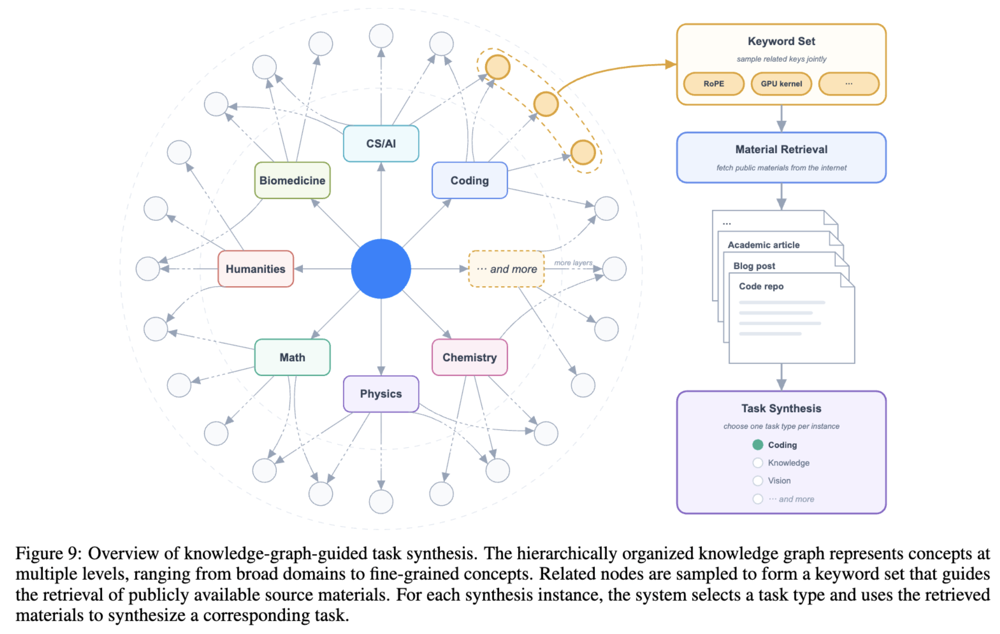

近年、Large Language Model (LLM) の開発において、事前学習におけるスケールアップと、推論時計算量（Test-Time Computation）の拡張という2つの軸が研究の中心となっている。しかし、オープンソースの領域では依然として1Tパラメータ前後のモデルが主流であり、最先端のプロプライエタリモデルとの性能差が拡大しつつあるのが現状であった。
この課題に対する強力な解答として、Moonshot AIが最新モデル「Kimi K3」のテクニカルレポートを公開し、同時にそのModel Weightsをオープンソースとしてリリースした。Kimi K3は、総パラメータ数2.8 Trillion (2.8T)、アクティブパラメータ数104 Billion (104B) を誇る巨大な Mixture-of-Experts (MoE) モデルであり、最大1 Million (1M) トークンの Context Window と Native Vision 機能を備えている。
本稿では、Kimi K3がどのようにして前世代のKimi K2から約2.5倍のScaling Efficiency向上を果たしたのか、その根幹をなすアーキテクチャの革新、Reinforcement Learning (RL) による推論能力の向上、そして特筆すべき手法である Knowledge-Graph-Guided Task Synthesis などの技術的詳細について深く掘り下げていく。
アーキテクチャの革新：情報フローの3次元スケーリング
Kimi K3のアーキテクチャは、系列長（Sequence Length）、ネットワークの深さ（Network Depth）、およびモデルの幅（Model Width）という3つの次元において情報の流れを最適化するように設計されている。
系列長のスケーリング：Hybrid Attention (KDA + Gated MLA)
長大な Context Window を効率的に処理するため、Kimi K3は層ごとに異なるAttention機構を組み合わせた Hybrid Attention を採用している。具体的には、各ブロックにおいて3層の Kimi Delta Attention (KDA) と1層の Gated MLA (Multi-head Latent Attention) を3:1の比率で配置している。
- Kimi Delta Attention (KDA)： KDAは、従来のSoftmax Attentionが抱えていた巨大なKVキャッシュの増大という問題を解決するため、系列の情報を固定サイズのRecurrent State \(\mathbf{S}_t \in \mathbb{R}^{d_k \times d_v}\) に圧縮する。Kimi K3では、計算のボトルネックとなっていた対角タイルの処理を解消するため、減衰率（Decay）のパラメータ化に改良を加えている。具体的には、対数減衰（Log-Decay）を下限付きのシグモイド関数でバウンドすることで、数値的なオーバーフローを防ぎ、すべてのCausal Tileにおいて高密度なTensor Coreを用いた行列乗算を可能にした。
- Gated MLA： 定期的に挿入されるMLA層は、No Position Encoding (NoPE) の状態で大域的なトークン間の相互作用（Global Content Interaction）を担う。さらに、入力依存のFull-Rank Output Gateを導入することで、トークンごとにGlobal Attentionから読み出すチャネルを動的に変調する機能が追加されている。
深さのスケーリング：Attention Residuals (AttnRes)
従来の残差接続（Residual Connections）は、過去のすべての層の情報を単一の隠れ状態に蓄積していくため、情報伝達のボトルネックになりやすかった。これに対し、Kimi K3は Attention Residuals (AttnRes) を導入している。
これは、各層が過去のすべての層（および埋め込み層）の表現に対してAttentionを計算し、必要な情報を選択的に取得するメカニズムである。計算量とメモリのオーバーヘッドを削減するため、層を複数のブロック（Kimi K3では12層ごとの8ブロック）に分割し、ブロック単位の表現に対してAttentionを行う Block Attention Residuals を採用している。これにより、ネットワークの深さ方向に対する情報の選択的アクセスが劇的に改善されている。
幅のスケーリング：Stable LatentMoE
Kimi K3は、各トークンに対して896個のRouted Expertsから16個をアクティブにするという極めて高いSparsity（疎性）を持つ LatentMoE を採用している。このような大規模な Mixture-of-Experts (MoE) は表現力を大幅に高める一方で、学習時の最適化を極めて不安定にするリスクを伴う。これを安定化させるため、以下の2つの重要なコンポーネントが導入された。
- Sigmoid Tanh Unit GLU (SiTU-GLU)： 従来のSwiGLUは正の領域で入力が青天井になるため、巨大なスケールのモデルではActivationの爆発を引き起こす可能性があった。SiTU-GLUは、SwiGLUの局所的な非線形性を維持しつつ、線形ブランチとアップブランチの両方に滑らかな上限（Soft Cap）を適用することで、Activationの外れ値を効果的に抑制する。
- Quantile Balancing (QB)： 補助損失（Auxiliary Loss）に依存しないLoad Balancing手法である。約1,000個に及ぶExpertsへのルーティングを均等に保つため、ルータのスコアマージンの分布（ヒストグラム）から直接分位数（Quantile）を計算し、エキスパートごとのバイアスを動的に調整する。これにより、訓練中のExpertへの負荷が極めて均等に保たれる。
Post-Trainingと高度な推論能力の獲得
Kimi K3の強さは、強固な事前学習モデルの上に構築された、Agenticなタスクや複雑な推論を解くための Post-Training パイプラインにある。
Knowledge-Graph-Guided Task Synthesis
今回公開されたレポートの中で特に興味深いアプローチの一つが、Knowledge-Graph-Guided Task Synthesis（知識グラフ主導のタスク合成）である。Reinforcement Learning (RL) のための高品質かつ多様なタスク環境を自動で構築するために、この手法が用いられている。

システムはまず、AIやAgent自身にウェブを探索させ、自己進化型の有向非巡回グラフ（DAG）として Knowledge Graph を構築する。大きなドメイン（例：コンピュータサイエンス、物理学）から始まり、末端の細粒度な概念（例：特定のGPUカーネルの最適化アルゴリズム）へとAgentが知識を掘り下げていく。タスクを生成する際は、このグラフから関連するノードをサンプリングし、対応するインターネット上の公開ドキュメントやコードリポジトリを取得して、合成Agent（Synthesis Agent）がRL用の多様な環境・タスクを生成する。この仕組みにより、ロングテールな専門知識から広範なドメインまで、学習データのカバレッジを動的かつシステマティックに制御することが可能となっている。
Multi-Effort Reinforcement Learning と MOPD
Kimi K3は、Test-Time Computation のスケールアップを目的として、様々な Reasoning Effort（推論の深さ：low, high, max）に応じた Reinforcement Learning (RL) を実施している。
- コーディング（ソフトウェアエンジニアリング、カーネル最適化など）
- 一般的なAgentタスク（数千回のツール呼び出しを伴う長期的な自律実行など）
- 一般的な知識・推論タスク
これら異なるドメインと推論レベルに特化した個別のPolicy（エキスパートモデル）を学習させた後、Multi-Teacher On-Policy Distillation (MOPD) と呼ばれる手法を用いて、単一のモデルへと統合（Consolidate）する。このプロセスによって、Kimi K3は単純な対話から、何百万トークンにも及ぶ長期的な自律型 Agentic Workflow まで、動的に推論の深さを変えながら対応できる汎用性を獲得している。
Multi-Trillion 規模を支える Infrastructure
2.8Tパラメータの Mixture-of-Experts (MoE) モデルを1M Context Window で学習・サービングするには、ソフトウェアとハードウェアの限界を押し広げるインフラストラクチャが必要不可欠である。
- MoonEP (Perfectly Balanced Expert-Parallel Training)： 学習時の最大の課題は、ノード間での計算負荷の不均衡である。MoonEPは、動的にRedundant Experts（冗長エキスパート）をプランニングし、各ランクに割り当てられるトークン数を数学的に完全に一致させる。これにより、Staticな計算シェイプでの実行とゼロコピーでの通信が可能になり、GPUの使用率を極限まで高めている。
- AgentENV (MicroVM Sandboxes)： 長期間にわたる Agentic Workflow の RL を行うため、Dockerのようなコンテナベースではなく、Firecracker を用いた MicroVM ベースのサンドボックス環境「AgentENV」を構築した。これにより、Agent が誤って Kernel Panic を引き起こすような破壊的な行動をとってもシステムを保護できる高い隔離性と、ミリ秒単位での状態の保存（Snapshot）や再開（Resume）を可能にする高い効率性を両立している。
パフォーマンスとオープンソース化の意義
数々のベンチマークにおいて、Kimi K3は Claude Fable 5 や GPT-5.6 Sol といった最上位のプロプライエタリモデルに肉薄する Frontier-level の性能を叩き出しており、既存のオープンソースモデル（あるいは他の多くのプロプライエタリモデル）を安定して上回っている。特に、長文脈を活かした SWE-Marathon（コーディング）や BrowseComp（ブラウザ操作のAgentタスク）、Math-Vision（視覚と数学的推論）などにおいて、最高クラスのスコアを記録した。
特筆すべきは、Moonshot AIがこの2.8T規模の Model Weights を完全に公開したことである。これまでのオープンソース LLM は最大でも数百Billionクラスに留まっていた。Kimi K3のリリースにより、世界中の研究者や開発者が、Kimi Delta Attention (KDA) の挙動や、Knowledge-Graph-Guided Task Synthesis で培われた Agentic な推論能力、そして大規模な Mixture-of-Experts (MoE) の振る舞いを直接手元で解析・ファインチューニングできるようになった。
Kimi K3は単なる新しいAIモデルではなく、オープンソースAIの到達点を数段引き上げ、今後のAIアーキテクチャやスケーリングの新たな「フロンティア」を提示する画期的なマイルストーンであると言えるだろう。